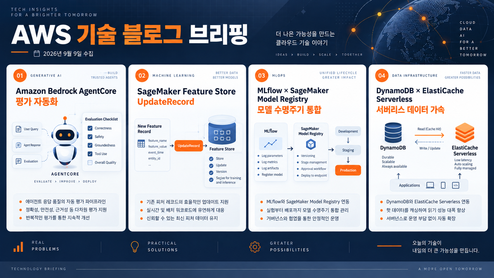
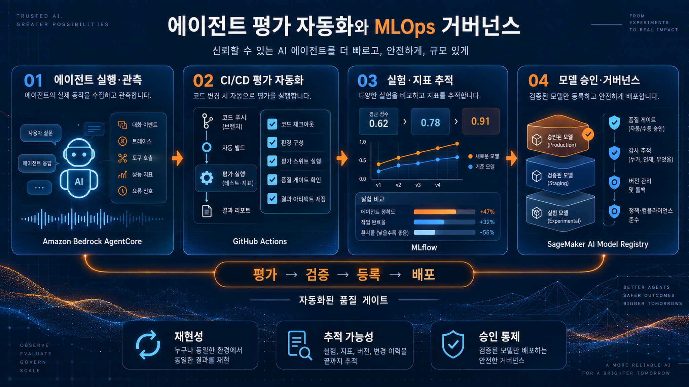
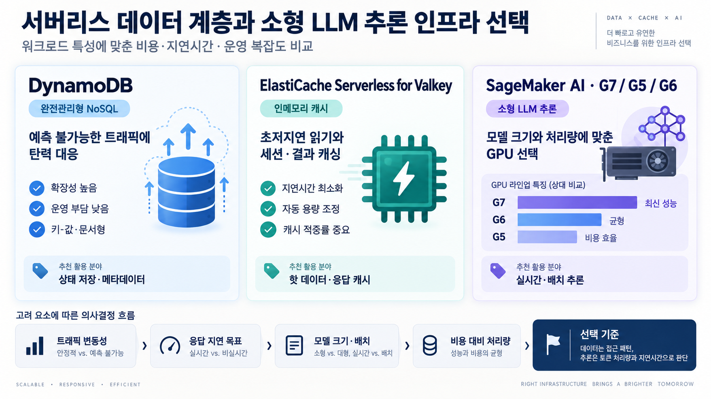

AI/ML · AWS Machine Learning Blog
Amazon Bedrock AgentCore와 GitHub Actions 기반 자동 에이전트 평가
Amazon Bedrock AgentCore와 GitHub Actions를 연결해 에이전트 평가를 CI 절차에 포함하는 방식을 다룹니다.
검토 포인트: 에이전트 변경 배포 전 자동 평가 기준과 실패 차단 정책을 세우는 것이 품질·리스크 관리 포인트입니다.
원문 보기이번 실행에서 확인한 AWS 공식 블로그 글을 raw 저장, LLM Wiki 동기화, GBrain 파일 저장 후 기업 적용 관점으로 재구성했습니다.

이번 수집에서는 Amazon Bedrock AgentCore 기반 평가 자동화, MLflow와 SageMaker Model Registry 연계, SageMaker Feature Store 업데이트, 소형 LLM 추론 벤치마크, 서버리스 데이터 계층 사례가 함께 확인됐습니다. 공통적으로 개발·평가·추론·데이터 저장 계층을 각각 별도 의사결정 항목으로 검증해야 한다는 점이 드러납니다.
AI/ML · AWS Machine Learning Blog
Amazon Bedrock AgentCore와 GitHub Actions를 연결해 에이전트 평가를 CI 절차에 포함하는 방식을 다룹니다.
검토 포인트: 에이전트 변경 배포 전 자동 평가 기준과 실패 차단 정책을 세우는 것이 품질·리스크 관리 포인트입니다.
원문 보기AI/ML · AWS Machine Learning Blog
SageMaker Feature Store가 UpdateRecord를 제공해 전체 레코드가 아니라 특정 피처만 갱신하는 방식이 가능해졌습니다.
검토 포인트: 실시간 피처 파이프라인은 쓰기 비용·동시성·데이터 신선도 관리 방식을 재검토해야 합니다.
원문 보기AI/ML · AWS Machine Learning Blog
DiDi가 Amazon Bedrock으로 컨택센터 QA를 지능화한 사례입니다.
검토 포인트: 고객 상담 품질 관리는 평가 기준의 일관성, 개인정보 보호, 상담 데이터 접근권한 설계가 핵심입니다.
원문 보기AI/ML · AWS Machine Learning Blog
HPE Zerto가 Amazon Bedrock을 활용해 장애 분석과 문제 해결을 지원하는 에이전틱 시스템을 구축한 사례입니다.
검토 포인트: IT 운영·재해복구 영역에서 자연어 기반 원인 분석을 적용할 때 출처 추적과 조치 승인 체계가 필요합니다.
원문 보기AI/ML · AWS Machine Learning Blog
MLflow와 SageMaker AI Model Registry 사이의 동기화로 모델 등록·승인·추적 체계를 연결하는 모델 거버넌스 패턴을 설명합니다.
검토 포인트: MLOps 조직은 실험 추적과 배포 승인 저장소가 분리될 때 생기는 감사 공백을 줄이는 통합 방식을 검토할 수 있습니다.
원문 보기AI/ML · AWS Machine Learning Blog
MLflow와 SageMaker AI Model Registry 사이의 동기화로 모델 등록·승인·추적 체계를 연결하는 모델 거버넌스 패턴을 설명합니다.
검토 포인트: MLOps 조직은 실험 추적과 배포 승인 저장소가 분리될 때 생기는 감사 공백을 줄이는 통합 방식을 검토할 수 있습니다.
원문 보기AI/ML · AWS Machine Learning Blog
Pathway가 SageMaker HyperPod 위에서 뇌 영감 아키텍처 개발을 수행한 사례입니다.
검토 포인트: 고성능 분산 학습이 필요한 연구 조직은 클러스터 운영·실험 재현성·GPU 활용률을 함께 검토해야 합니다.
원문 보기AI/ML · AWS Machine Learning Blog
SageMaker AI에서 소형 LLM 추론 워크로드를 G7, G5, G6 인스턴스 기준으로 벤치마킹한 내용입니다.
검토 포인트: 기업은 모델 크기와 지연시간, GPU 세대별 비용 효율을 함께 측정한 뒤 추론 인프라를 선택해야 합니다.
원문 보기Data/Database · AWS Korea Tech Blog
게임 글로벌 출시에서 DynamoDB와 ElastiCache Serverless for Valkey를 결합해 상태 저장·캐시 계층을 탄력적으로 구성한 사례입니다.
검토 포인트: 게임·디지털 서비스 조직은 서버리스 데이터 계층을 성능 피크 대응과 운영 단순화 관점에서 검토할 수 있습니다.
원문 보기| 기사 | 게시 | 카테고리 |
|---|---|---|
| Amazon Bedrock AgentCore와 GitHub Actions 기반 자동 에이전트 평가 | 2026-09-09 | AI/ML |
| Amazon SageMaker Feature Store의 UpdateRecord로 피처 단위 쓰기 지원 | 2026-09-09 | AI/ML |
| DiDi의 Amazon Bedrock 기반 지능형 컨택센터 QA 구축 사례 | 2026-09-09 | AI/ML |
| HPE Zerto의 Amazon Bedrock 기반 에이전틱 문제 해결 시스템 구축 사례 | 2026-09-09 | AI/ML |
| MLflow와 Amazon SageMaker AI Model Registry 동기화로 모델 거버넌스 구현 1부 | 2026-09-09 | AI/ML |
| MLflow와 Amazon SageMaker AI Model Registry 동기화로 모델 거버넌스 구현 2부 | 2026-09-09 | AI/ML |
| Pathway의 Amazon SageMaker HyperPod 기반 뇌 영감 아키텍처 개발 사례 | 2026-09-09 | AI/ML |
| SageMaker AI에서 소형 LLM 추론 벤치마크: G7과 G5·G6 비교 | 2026-09-09 | AI/ML |
| SEGA의 Sonic Rumble Party 글로벌 출시를 뒷받침한 DynamoDB·ElastiCache Serverless 활용 사례 | 2026-09-09 | Data/Database |
AgentCore 평가와 GitHub Actions 연계는 에이전트 품질 확인을 개발 흐름 안에 넣는 방향을 보여줍니다. MLflow와 SageMaker Model Registry 동기화는 실험 추적과 승인 저장소 간 단절을 줄이는 모델 관리 패턴이며, Feature Store의 피처 단위 쓰기는 실시간 피처 갱신 비용과 지연시간 관리에 영향을 줍니다.
기업은 에이전트, 모델 레지스트리, 추론 인프라, 데이터 계층을 분리해 검토해야 합니다. 각 항목은 품질 평가, 감사 이력, 비용 효율, 접근 권한 기준이 다르기 때문입니다.
국내 기업이 참고할 부분은 게임, 컨택센터, IT 문제 해결, 분산 학습처럼 업무 도메인이 분명한 사례입니다. 다만 비용 구조, 데이터 반출 조건, 권한 설계, 품질 평가 기준은 회사별 보안·감사 기준에 맞춰 별도 확인이 필요합니다.
에이전트와 모델 레지스트리를 연결하는 경우 평가 실패 시 배포 차단, 승인 이력 보존, 데이터 접근 범위 제한이 필요합니다. 컨택센터·문제 해결 사례는 개인정보와 내부 운영 로그를 다루므로 최소 권한, 감사 로그, 오류 대응 책임 소재를 명확히 해야 합니다.
관찰된 사실: Amazon Bedrock AgentCore와 GitHub Actions를 연결해 에이전트 평가를 CI 절차에 포함하는 방식을 다룹니다.
기업 의사결정 시사점/리스크/기회: 에이전트 변경 배포 전 자동 평가 기준과 실패 차단 정책을 세우는 것이 품질·리스크 관리 포인트입니다.
관찰된 사실: SageMaker Feature Store가 UpdateRecord를 제공해 전체 레코드가 아니라 특정 피처만 갱신하는 방식이 가능해졌습니다.
기업 의사결정 시사점/리스크/기회: 실시간 피처 파이프라인은 쓰기 비용·동시성·데이터 신선도 관리 방식을 재검토해야 합니다.
관찰된 사실: DiDi가 Amazon Bedrock으로 컨택센터 QA를 지능화한 사례입니다.
기업 의사결정 시사점/리스크/기회: 고객 상담 품질 관리는 평가 기준의 일관성, 개인정보 보호, 상담 데이터 접근권한 설계가 핵심입니다.
관찰된 사실: HPE Zerto가 Amazon Bedrock을 활용해 장애 분석과 문제 해결을 지원하는 에이전틱 시스템을 구축한 사례입니다.
기업 의사결정 시사점/리스크/기회: IT 운영·재해복구 영역에서 자연어 기반 원인 분석을 적용할 때 출처 추적과 조치 승인 체계가 필요합니다.
관찰된 사실: MLflow와 SageMaker AI Model Registry 사이의 동기화로 모델 등록·승인·추적 체계를 연결하는 모델 거버넌스 패턴을 설명합니다.
기업 의사결정 시사점/리스크/기회: MLOps 조직은 실험 추적과 배포 승인 저장소가 분리될 때 생기는 감사 공백을 줄이는 통합 방식을 검토할 수 있습니다.


Image Prompt 1: AWS 공식 블로그 신규 수집 현황을 한국어 기업 브리핑 스타일로 요약하는 카드형 시각 자료.
Image Prompt 2: 에이전트 평가, MLOps, 서버리스 데이터 계층 변화를 한국어로 설명하는 기술 브리핑 이미지.
Image Prompt 3: 기업 의사결정자가 검토할 리스크와 기회를 한국어 키워드 중심으로 보여주는 요약 이미지.
이미지 생성 방식: GPT Image 2 직접 생성(최적화 모델 미지원으로 원문 프롬프트 사용)